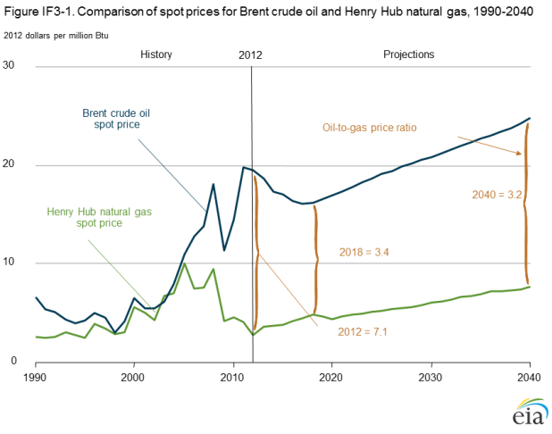
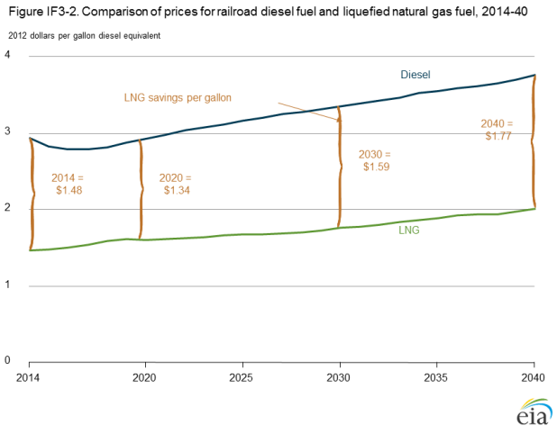
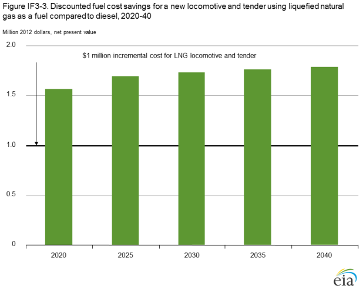
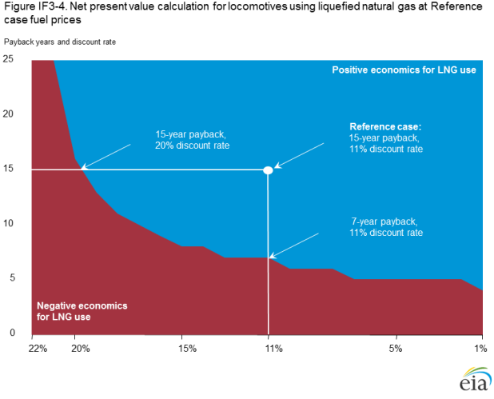
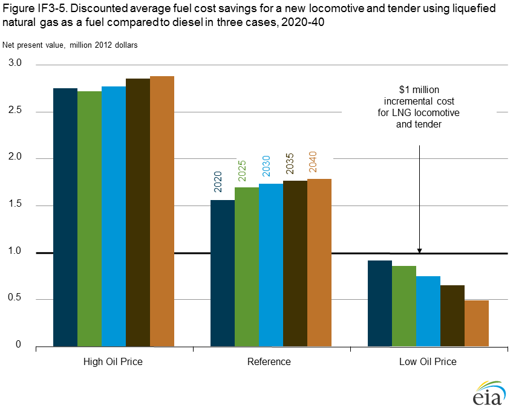
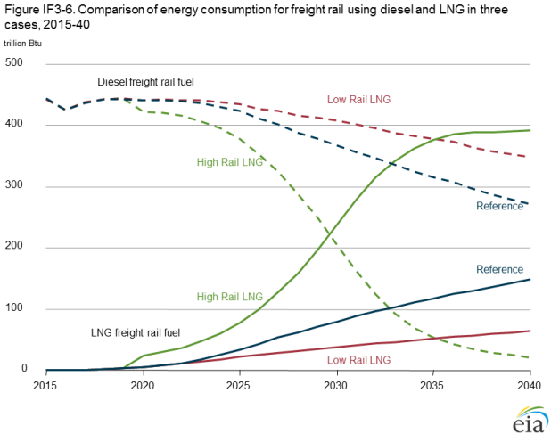

Potential of liquefied natural gas use as a railroad fuel
Release Date: 4/14/14
Continued growth in domestic natural gas production, along with substantially lower natural gas spot prices compared to crude oil, is reshaping the U.S. energy economy and attracting considerable interest in the potential for fueling freight locomotives with liquefied natural gas (LNG). While there is significant appeal for major U.S. railroads to use LNG as a fuel for locomotives because of its potentially favorable economics compared with diesel fuel, there are also key uncertainties as to whether, and to what extent, the railroads can take advantage of this relatively cheap and abundant fuel.
Freight railroads and the basic economics of fuel choice
Major U.S. railroads, known commonly as Class 1 railroads, are defined as line-haul freight railroads with certain minimum annual operating revenue. Currently, that classification is based on 2011 operating revenue of $433.2 million or more [1]. While there are 561 freight railroads operating in the United States, only seven are defined as Class 1 railroads. The Class 1 railroads account for 94% of total freight rail revenue [2]. They haul large amounts of tonnage over long distances, and in the process they consume significant quantities of diesel fuel. In 2012, the seven Class 1 railroads consumed more than 3.6 billion gallons (gal) of diesel fuel [3], amounting to 10 million gal/day and representing 7% of all diesel fuel consumed in the United States. The two largest consumers of diesel fuel among the Class 1 railroads—Burlington Northern Santa Fe (BNSF) and Union Pacific—consumed more than 1 billion gal each in 2012. The cost to Class 1 railroads of consuming such large quantities of diesel fuel was more than $11 billion in 2012, representing 23% of their total operating expense (Table IF3-1).
| Class 1 railroad (2012) | Diesel fuel consumption (gallons) | Fuel cost (thousand 2012 dollars) |
Fuel cost share of total operating expense |
|---|---|---|---|
| Burlington Northern Santa Fe | 1,335,417,552 | $4,273,779 | 29% |
| Union Pacific | 1,108,029,359 | $3,505,671 | 24% |
| CSX Transportation | 490,902,017 | $1,542,747 | 18% |
| Norfolk Southern | 462,466,433 | $1,437,178 | 18% |
| Canadian National Grand Trunk | 101,555,124 | $326,303 | 16% |
| Canadian Pacific Soo | 71,575,774 | $231,211 | 16% |
| Kansas City Southern | 64,078,412 | $195,428 | 22% |
| Total | 3,634,024,671 | $11,512,317 | 23% |
| Source: Class 1 Railroad diesel fuel consumption, fuel cost, and fuel cost share of operating expense, 2012: U.S. Departmentof Transportation, Surface Transportation Board, “Annual Report Financial Data,” http://www.stb.dot.gov/econdata.nsf/f039526076cc0f8e8525660b006870c9?OpenView. |
Class 1 railroads are considering the use of LNG to fuel locomotives because of the potential for significant cost savings. Following years of tight price linkage, spot prices for crude oil (North Sea Brent) and natural gas (Henry Hub) diverged around 2005. In 2012, the Brent spot price was about seven times the Henry Hub spot price on an energy equivalent basis. That differential is projected to narrow in the midterm, but a persistent gap is expected to continue, with crude oil prices more than three times higher than natural gas per million British thermal units (MMBtu) throughout the Reference case projection period, going out to 2040 (Figure IF3-1).
figure data
The large differential between crude oil and natural gas commodity prices translates directly into a significant disparity between projected LNG and diesel fuel prices, even after accounting for natural gas liquefaction costs that exceed refining costs. In the AEO2014 Reference case, the long-run price difference between locomotive diesel fuel and LNG in rail applications increases from $1.48/gal of diesel equivalent in 2014 to $1.77 in 2040 (Figure IF3-2).
figure data
Given the difference between LNG and diesel fuel prices in the Reference case, railroads that switch locomotive fuels could accrue significant fuel cost savings. Locomotives are used intensively, consume large amounts of fuel, and are kept in service for relatively long periods of time. The net present value of future fuel savings across the Reference case projection for an LNG locomotive compared to a diesel counterpart is well above the roughly $1 million higher cost of the LNG locomotive and tender (Figure IF3-3).
figure data
Relatively large changes in assumptions used to evaluate investments in LNG locomotives (such as a significantly shorter payback period or much higher discount rate) or in fuel prices would be required to change LNG fuel economics for railroad use from favorable to unfavorable. Starting from the Reference case, the economics for switching to LNG locomotives remain favorable unless the payback period is reduced by eight years or the discount rate applied is raised by nine percentage points (Figure IF3-4). However, in the Low Oil Price case, the net present value of fuel cost savings associated with LNG use are not large enough to offset the higher additional upfront cost of LNG locomotives and tenders (Figure IF3-5). The shortfall in the value of fuel savings relative to upfront investment increases over the projection period in this case, making investments in LNG fueling less attractive over time. Clearly, uncertainty about future fuel prices suggests that there is some risk for companies in making such a fundamental change in freight rail operations.

figure data
Challenges for liquefied natural gas as a freight rail fuel
While simple economic calculations involving the comparison of fuel cost savings to additional upfront cost are relatively straightforward, other factors, including operational, financial, regulatory, and mechanical challenges, also affect fuel choices by railroads. One of the most challenging factors raised by the switch to LNG locomotives by Class 1 railroads is the effect on operations. Switching from diesel fuel to LNG would require a new delivery infrastructure for locomotive fuel. Natural gas would need to be delivered to fuel depots, either by truck in smaller quantities, as LNG [4],or perhaps by pipeline. Larger quantities of natural gas would require liquefaction before delivery to tender cars for use in locomotives. Building the new infrastructure would require a large financial investment in addition to the large investments made in locomotives and tender cars.
The building of LNG refueling infrastructure could also complicate the inter-operability of the rail network, depending on how quickly modifications could be made to accommodate refueling at multiple points around the nation. Impeding the ability of the rail network system to move goods because of a lack of fuel availability could drive up costs and lead to reductions in network flexibility and operational efficiency [5]. In addition, operations could be further affected by fuel switching because of the cost of training staff at refueling depots and in maintenance shops, updating maintenance facilities to handle LNG locomotives and tenders, and managing more extensive logistics [6]. Further, LNG locomotives and tender cars could require more maintenance than their diesel counterparts. All of these operational changes would create a duplicative infrastructure [7], because many diesel-fueled locomotives still would be in service at least for some significant period, and compression-ignited LNG locomotives still require at least some diesel fuel for combustion ignition.
Replacing the current stock of diesel locomotives with LNG locomotives and tender cars would represent a significant financial investment by Class 1 railroads. In 2012, there were 25,174 locomotives in the service of Class 1 railroads, the vast majority of which were line-haul locomotives [8]. A new diesel line-haul locomotive costs about $2 million [9], and rebuilt locomotives cost about half that amount. With a new LNG locomotive and tender costing about $1 million more than a diesel counterpart, the cost to replace the entire diesel locomotive stock with LNG locomotives and tenders would be tens of billions of dollars, not including additional infrastructure, training, logistics, and a potential increase in maintenance costs. Moreover, much of the cost of the transition, such as purchases of locomotives and tender cars, potentially would occur over a much shorter time period than a fuel payback period.
The financing requirement of large capital expenditures complicates the rather straightforward calculation of locomotive fuel economics. The amount of capital available to Class 1 railroads, either on hand or raised in capital markets, is an important factor in determining whether, or to what extent, railroads can take advantage of fuel cost savings over time. The decision to switch from diesel fuel to LNG is also influenced by the facts that railroads are a highly capital-intensive industry [10] with complete responsibility for maintaining the physical rail network, that they face many competing needs for financial investment, and that they must ensure adequate return on investment for their shareholders.
On the regulatory side, LNG rail cargos currently are not permitted without a waiver from the Federal Railroad Administration (FRA) under Federal Emergency Management Agency (FEMA) rules. The development of standard LNG tenders and regulations is underway, with issues related to safety, crashworthiness, and environmental impact, including methane leakage, under consideration [11].
Finally, LNG locomotives currently are undergoing extensive testing and demonstration to determine their fuel consumption, emissions, operational performance, and range under real-world conditions. Locomotives and tenders will be evaluated to ensure mechanical performance of such components as connections between tender and locomotive. Several Class 1 railroads are planning to start LNG locomotive demonstration projects to provide better understanding of the obstacles to an LNG fuel switch.
The future of liquefied natural gas in freight rail: lessons from history
The large potential fuel cost savings from the switch to LNG locomotives from diesel has resulted in great interest on the part of the freight rail industry, observers, and analysts. The companies have discussed the potential of LNG as comparable with the switch from steam propulsion to diesel in the 1940s and 50s [12], a revolution in freight rail known simply as "dieselization." Other industry experts have responded with more caution, likening the switch to the more evolutionary transformation of diesel-electric freight rail locomotives from direct current (DC) to alternating current (AC) propulsion that has been occurring since the early 1990s [13].
The diesel revolution in rail began in yard-switching operations during the mid-1920s, followed by passenger rail in the mid-1930s. After an initial period of hesitation, mainly because of the vast amount of capital already invested in steam locomotives and their refueling and watering infrastructure, diesel freight locomotives first appeared in 1941. They then captured the market at an extraordinary rate, with the last steam locomotive mustered out of service in 1961 [14].
The advantages of using diesel locomotives over steam were numerous. While diesel locomotive costs were about double per horsepower compared to steam, diesel locomotives proved superior in almost every other way. Steam locomotives had to slow or stop to take on water, requiring extensive watering infrastructure, and they needed nearly constant cleaning, maintenance, and repair, with annual costs reaching 25% of the initial cost of the locomotive. The switch to diesel allowed the railroads to avoid costly watering time and infrastructure and dramatically reduced maintenance and repair. As a result, diesel engines could travel faster and thus double the annual mileage of steam locomotives. Diesel engines, unlike steam engines, could be turned on and off with relative ease; a lead diesel locomotive could control other locomotives on a unit train; the costs of rail line maintenance were reduced because diesel locomotives were lighter and did not “pound the tracks”; and maintenance costs were lowered by the use of standardized parts and design [15].
Although diesel freight locomotives took over the market in 20 years, freight locomotives with AC traction motors, which began service in Class 1 railroads in the early 1990s, represent about 17% of the locomotive stock today [16]. AC locomotives have the major advantage of greater adhesion levels than their counterparts equipped with DC motors, allowing fewer locomotives to pull the same load. The ability to reduce the number of locomotives pulling a unit train represents a significant improvement in fuel efficiency, but it has not been adopted to the same extent as dieselization. Class 1 railroads have gradually adopted or decided against AC traction for a variety of reasons related to operations, upfront incremental costs, and the ability to take advantage of increased adhesion levels. For example, in recent years Union Pacific, Canadian Pacific, and CSX have chosen AC traction locomotives because of locomotive unit reductions, reliability, interoperability, and life-cycle costs. Canadian National Grand Trunk and Norfolk Southern have stayed with DC traction because of incremental cost and the inability to apply unit train reductions. BNSF has chosen AC locomotives for coal runs, where they can take advantage of unit locomotive reductions, and DC locomotives for intermodal runs, where they cannot [17].
These historical examples of the impacts of new technologies and fuels may offer insights into the future potential for LNG locomotives. As happened during the diesel revolution, freight railroads may adopt a completely new locomotive fuel and infrastructure over two decades if there is a compelling business case. However, many cost and operational efficiencies made diesel locomotives superior to steam locomotives, and the same dynamic may not be seen with LNG. Moreover, investment in existing capital stock and relevant equipment may be an impediment early in a transformation process.
The ongoing evolution of AC traction locomotives shows that Class 1 railroads will invest in a new locomotive technology, at least gradually, if there is significant reason to do so. The decision may balance factors such as cost with operational efficacy.
Liquefied natural gas in freight rail—revolution and evolution cases
AEO2014 includes two alternative cases that examine the potential impact of LNG in freight rail, based on the diesel revolution and AC traction evolution. The cases also look at the impact of a specific LNG engine technology. The High Rail LNG case represents a revolution in freight rail locomotive fueling similar to that of dieselization in the 1940s and 1950s. After an initial trial period starting in 2017 through 2020, Class 1 railroads take advantage of the favorable economics of LNG locomotive fuel such that after a 20-year period, all freight rail motive stock is converted to LNG capability. The new locomotives are assumed to use highpressure direct injection (HPDI) LNG engine technology, which uses natural gas as the primary fuel and relies on a small amount of diesel fuel for ignition. HPDI engines use fuel at a ratio of about 95% LNG to 5% diesel. LNG-only engines are not expected to be adopted for locomotives.
The Low Rail LNG case represents an evolution in freight rail locomotive fueling similar to the ongoing penetration of AC traction
locomotives. After an initial trial period from 2017 through 2020, Class 1 railroads take advantage of the favorable LNG locomotive
fuel economics by turning over their engine stocks at an average rate of 1% per year. The new LNG locomotives are assumed to
use a dynamic gas blending engine, which uses diesel fuel for combustion until intake temperature rises, at which point natural
gas is used. The engines are LNG-capable up to a fuel consumption ratio of 80% LNG and 20% diesel and have the added
advantage of being dual-fuel compatible, with the ability to switch back to 100% diesel fuel as needed. The Reference case does
not make any assumption about the type of LNG engine used but instead allows LNG to penetrate into freight rail at the average
annual turnover rate of new and rebuilt stock experienced over the last decade.
The High and Low Rail LNG cases show a dramatic change in the fuel mix used by freight rail. In the Reference case, LNG fuel use increases from 0.5 trillion Btu in 2017 to 148 trillion Btu in 2040, or 35% of total freight rail energy consumption (Figure IF3-6). In the High Rail LNG case, LNG fuel consumption increases to 392 trillion Btu in 2040, or 95% of freight rail energy consumption. LNG consumption in the Low Rail LNG case increases to just 64 trillion Btu, or 16% of total freight energy consumption.
figure data
While the impacts are dramatic in the freight rail sector, it is
important to note that the impacts on total energy use in the
U.S. transportation system and on the nation's total energy
consumption are relatively small. In the Reference case,
transportation diesel consumption increases from about
6 quadrillion Btu in 2012 to 6.5 quadrillion Btu in 2017 and
7.5 quadrillion Btu in 2040, with railroad diesel use of 0.5
quadrillion Btu in 2012 decreasing to 0.4 quadrillion Btu in
2017 and 0.3 quadrillion Btu in 2040, when LNG accounts for
35% of projected energy use by freight rail in the Reference
case. Most transportation diesel fuel consumption—more
than 80%—occurs in heavy-duty vehicles. Because freight
rail accounts for only a small share of transportation diesel
use, projected total transportation diesel fuel use in 2040
varies only modestly across cases with different levels of LNG
use in freight rail, ranging from 7.3 quadrillion Btu in the High
Rail LNG case to 7.6 quadrillion Btu in the Low Rail LNG case.
Projected natural gas consumption for transportation (excluding pipeline transportation) is sensitive to variation in freight rail use
of LNG, because relatively small amounts of natural gas currently are consumed in mobile applications either as compressed or
liquefied natural gas. Natural gas consumption in the transportation sector (including pipeline transportation) increases from 0.9
quadrillion Btu in 2040 in the Reference case to 1.1 quadrillion Btu in the High Rail LNG case and to 0.8 quadrillion Btu in the Low
Rail LNG case. The projected changes in use of LNG in rail have marginal impacts on retail natural gas prices in the transportation
sector, which impact natural gas demand in other transportation uses. As a result of these price changes, heavy-duty truck
natural gas demand partially offsets the consumption impacts occurring in rail.
Because the transportation sector is a relatively small consumer of natural gas compared to other sectors, the seemingly dramatic fuel switch from the perspective of freight rail is only a minor change in overall U.S. natural gas consumption. Total U.S. natural gas energy consumption varies from 32.3 quadrillion Btu in 2040 in the Reference case to 32.4 quadrillion Btu in the High Rail LNG case and 32.1 quadrillion Btu in the Low Rail LNG case.
Endnotes
- Association of American Railroads, Class I Railroad Statistics (July 9, 2013), https://www.aar.org/StatisticsAndPublications/Documents/AAR-Stats-2013-07-09.pdf. Accessed January 23, 2014.
- S.C. Davis, S.W. Diegel, and R.G. Boundy, Transportation Energy Databook: Edition 32, ORNL-6989 (Oak Ridge, TN, July 2013), Chapter 9, Table 9.8, "Summary Statistics for Class 1 Freight Railroads, 1970-2011."
- U.S. Department of Transportation, Surface Transportation Board, Annual Reports Financial Data, http://www.stb.dot.gov/econdata.nsf/f039526076cc0f8e8525660b006870c9?OpenView.
- W.C. Vantuono, "A Closer Look at LNG," Railway Age (October 2013).
- BNSF Railway Company, Union Pacific Railroad Company, Association of American Railroads, and California Environmental Associations, An Evaluation of Natural Gas-fueled Locomotives (November 2007).
- W.C. Vantuono, "A Closer Look at LNG," Railway Age (October 2013).
- BNSF Railway Company, Union Pacific Railroad Company, Association of American Railroads, and California Environmental Associations, An Evaluation of Natural Gas-fueled Locomotives (November 2007).
- U.S. Department of Transportation, Surface Transportation Board, Annual Report Financial Data (2012 and various years), http://www.stb.dot.gov/econdata.nsf/f039526076cc0f8e8525660b006870c9?OpenView.
- U.S. Department of Transportation, Surface Transportation Board, Annual Report Financial Data (2012 and various years), http://www.stb.dot.gov/econdata.nsf/f039526076cc0f8e8525660b006870c9?OpenView.
- Association of American Railroads, Railroad Infrastructure Investment, https://www.aar.org/keyissues/Pages/Infrastructure-Investment.aspx#.Uuq3EftTUgo.
- W.C. Vantuono, "A Closer Look at LNG," Railway Age (October 2013).
- K. Smith, "LNG: fuel of the future?" International Railway Journal (December 9, 2013), http://www.railjournal.com/index.php/locomotives/lng-fuel-of-the-future.html.
- W.C. Vantuono, "A Closer Look at LNG," Railway Age (October 2013).
- This summary of many of the major factors related to the switch from steam locomotives to diesel locomotives is taken from C. Wolmar, The Great Railroad Revolution: The History of Trains in America (Perseus Books Group, 2012), ISBN 978-1-61039-179-5.
- C. Wolmar, The Great Railroad Revolution: The History of Trains in America (Perseus Books Group, 2012), ISBN 978-1-61039-179-5.
- W.C. Vantuono, "A Closer Look at LNG," Railway Age (October 2013).
- Electro Motive Diesel, "The Merits of AC vs DC Locomotives" (November 2008), http://www.slideshare.net/RailwaysandHarbours/merits-of-ac-vs-dc-locomotives-presentation.
Comments
Read what others are saying …
08/13/2014 - Texas, United States
1.Consider impact of free piston linear generators operating at compression ratios of 40 or more burning very lean fuel mixtures with thermal efficiencies of up to 80% such as researched by Sandia labs and the DOT. Such engines can switch fuels and change compression ratios on the fly have lower maintenance, fewer moving parts and longer life projections. 2. The carbon footprint of LNG is significantly lower than diesel and the lowest of carbon based fuels. 3. Such engines can also operate on anhydrous ammonia for no carbon footprint if it is made from water using renewable solar or wind power. Good article, Thanks John
04/23/2014 - Australia
Great article. Some more coverage on storage costs would be useful with consideration of carbon costs accentuating the difference between diesel and LNG.
04/14/2014 - Texas, United States
The main failing of this assessment, which actually nullifies the conclusions, is the projected price disparity between liquid fuels and LNG, the result of the current crude price bubble. A more realistic assumption is the return of the price relationship to historical levels going forward.